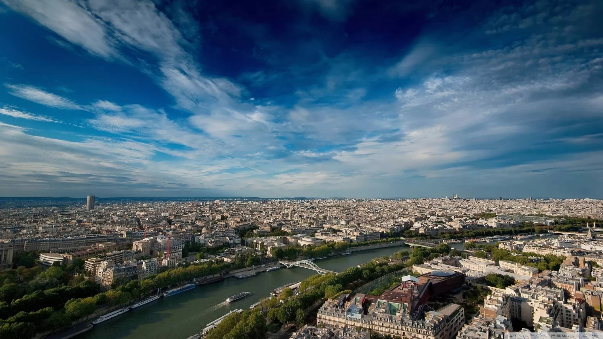
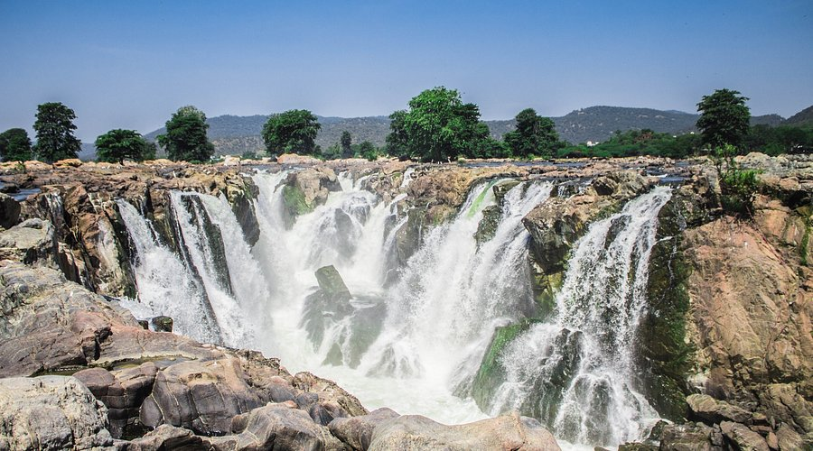
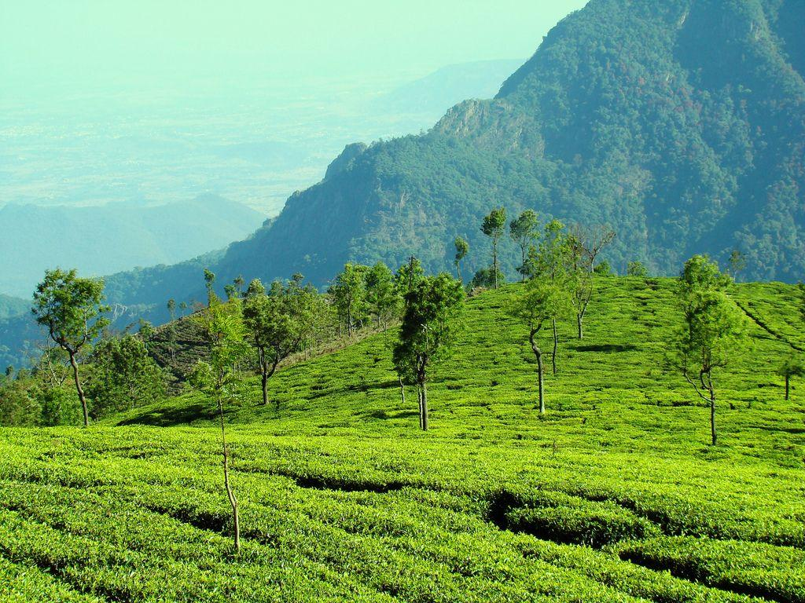
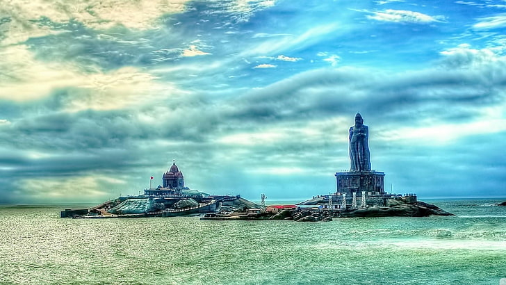
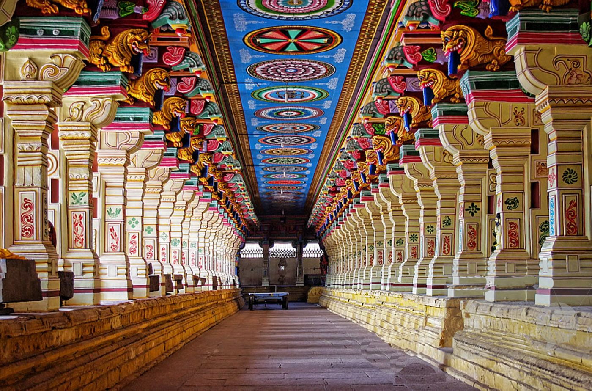
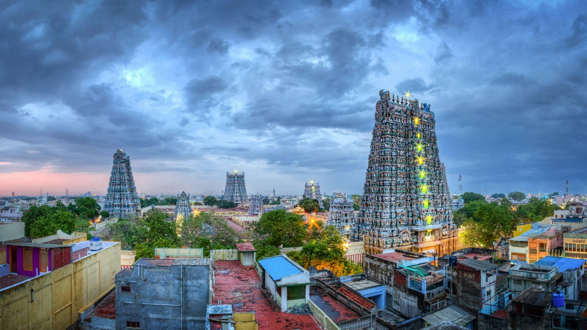

The capital city of Tamil Nadu, Chennai is a major cultural and economic center.
It is known for its historic landmarks, long urban beaches like Marina Beach, and vibrant arts scene.

Often referred to as the "Niagara of India" (along with Athirappilly), Hogenakkal is located on the Kaveri river.
It is famous for its medicinal baths and coracle boat rides through the turbulent waters.

Known as the "Queen of Hill Stations," Ooty is nestled in the Nilgiri Hills.
It is famous for its tea gardens, the Nilgiri Mountain Railway, and a pleasant, cool climate year-round.

Located at the southernmost tip of India, this is where the Arabian Sea, the Bay of Bengal, and the Indian Ocean meet.
It is famous for the sunrise and sunset views, the Thiruvalluvar Statue, and the Vivekananda Rock Memorial.

Rameswaram is a significant pilgrimage site located on Pamban Island.
The Ramanathaswamy Temple is renowned for its majestic corridors, which are among the longest in the world, featuring intricately carved pillars.

One of the oldest continuously inhabited cities in the world, Madurai is the cultural soul of Tamil Nadu.
It is anchored by the magnificent Meenakshi Amman Temple, known for its towering gopurams (gateway towers) covered in thousands of colorful sculptures.